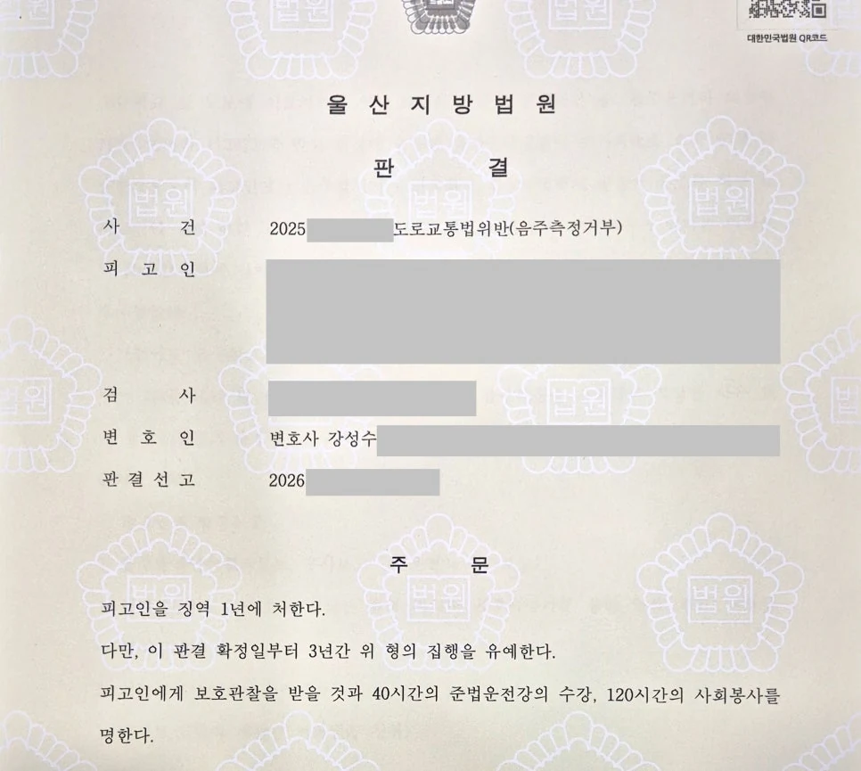

핵심 결과
최근 법원은 음주측정거부를 매우 엄격하게 봅니다.
단순 음주운전보다 더 무겁게 평가되는 경우도 있습니다.
측정 자체를 거부한 행위가 음주 사실을 숨기려는 시도이자 수사를 무력화하려는 태도로 보일 수 있기 때문입니다.
이번 사건은 더 불리했습니다.
의뢰인에게는 과거 음주운전 전과가 3회 있었고, 그중 한 번은 실형 전력까지 있었습니다.
그럼에도 법무법인 우린은 사건 구조를 다시 정리해 징역 1년, 집행유예 3년의 결과를 이끌어냈습니다.
| 구분 | 내용 |
|---|---|
| 사건 분야 | 음주측정거부 |
| 불리한 전력 | 음주운전 전과 3회 |
| 가장 큰 위험 | 과거 동일 범죄 실형 전력 |
| 재판상 쟁점 | 재범 가능성, 교화 가능성, 음주 문제 개선 여부 |
| 주요 대응 | 차량 처분, 단주 노력, 생활 환경 정리, 양형자료 제출 |
| 최종 결과 | 징역 1년, 집행유예 3년 |
사건 개요
의뢰인이 처음 상담을 왔을 때, 상황은 매우 불리했습니다.
경찰의 음주측정 요구가 있었습니다.
하지만 의뢰인은 이를 거부했습니다.
음주측정거부는 단순한 절차 위반으로 끝나지 않습니다.
법원은 이를 적극적인 수사 방해로 볼 수 있습니다.
특히 이번 사건은 과거 전력이 문제였습니다.
의뢰인에게는 이미 음주운전 전과가 3회 있었습니다.
그중 한 번은 실형을 살고 나온 전력까지 있었습니다.
실형 가능성이 컸던 이유
- 음주측정 요구를 거부했습니다.
- 과거 음주운전 전과가 3회 있었습니다.
- 동일 범죄로 실형을 받은 전력이 있었습니다.
- 최근 법원은 음주 범죄에 무관용 기조를 보이고 있습니다.
이런 조건에서는 단순한 반성문만으로 집행유예를 기대하기 어렵습니다.
음주측정거부가 위험한 이유
음주측정거부는 음주운전 수치를 다투는 사건과 다릅니다.
측정 자체를 거부했기 때문에 재판부는 더 엄격하게 볼 수 있습니다.
단속 현장의 실랑이가 재판에서는 수사 무력화 시도로 해석될 수 있습니다.
또한 전과가 누적된 사건이라면 문제는 더 커집니다.
재판부는 보통 이렇게 봅니다.
“과거 처벌을 받았는데도 다시 음주 관련 범행이 반복되었다.”
“사회 안에서 교화될 가능성이 낮은 것 아닌가.”
결국 핵심은 하나입니다.
이번 사건 이후 실제로 무엇이 달라졌는지를 보여줘야 합니다.
해결 전략
1. 단순한 반성이 아니라 사건의 맥락을 재구성했습니다
전과가 많은 사건에서 “잘못했습니다”라는 말만 반복하면 설득력이 떨어집니다.
법무법인 우린은 과거 사건들과 이번 사건의 차이를 구체적으로 정리했습니다.
과거 실형 이후 의뢰인의 생활이 어떻게 변화했는지, 이번 사건이 단순한 악습의 반복으로만 볼 수 없는 이유를 자료로 설명했습니다.
2. 재범 가능성을 낮추는 구조를 만들었습니다
“다시는 안 하겠습니다”라는 말은 누구나 할 수 있습니다.
재판부가 보는 것은 말이 아니라 구조입니다.
차량 처분 여부, 단주를 위한 치료, 가족의 감독, 생활 환경의 변화 등 다시 같은 범행이 반복되기 어려운 조건을 정리했습니다.
3. 판사가 집행유예를 선택할 명분을 설계했습니다
집행유예는 단순히 선처를 부탁한다고 나오는 결과가 아닙니다.
재판부가 “사회 내에서 한 번 더 교정할 기회를 줄 수 있다”고 판단할 근거가 필요합니다.
그래서 반성, 재범 방지, 생활 기반, 치료 계획, 가족 관계를 하나의 흐름으로 묶어 제출했습니다.
| 대응 항목 | 준비한 내용 |
|---|---|
| 사건 맥락 | 과거 전력과 이번 사건의 차이점 정리 |
| 재범 방지 | 차량 처분, 단주 치료, 생활 환경 변화 자료 |
| 양형자료 | 가족 관계, 직장, 사회적 유대관계 정리 |
| 변론 방향 | 실형보다 사회 내 교정이 타당하다는 점 강조 |
| 최종 목표 | 실형 방어 및 집행유예 가능성 확보 |
결과
법원의 최종 판단은 징역 1년, 집행유예 3년이었습니다.
실형 가능성이 컸던 사건입니다.
하지만 재판부는 의뢰인의 현재 생활 환경과 재범 방지 노력을 함께 보았습니다.
단순한 반성이 아니라, 실제 변화 가능성을 자료로 확인한 것입니다.
최종 결과
음주운전 전과 3회와 실형 전력까지 있었던 음주측정거부 사건에서 징역 1년, 집행유예 3년이 선고되었습니다.
의뢰인은 당장 구속되는 상황을 피하고, 사회 안에서 다시 생활을 이어갈 기회를 얻었습니다.
음주측정거부 사건에서 조심해야 할 점
음주측정거부 사건은 초기 대응이 중요합니다.
단순히 “술을 마시지 않았다”고 주장하는 방식은 위험할 수 있습니다.
측정 거부 경위, 당시 태도, 경찰관과의 대화 내용, 운전 경위, 과거 전력, 현재 생활 환경을 모두 종합해야 합니다.
전과가 많을수록 더 그렇습니다.
재판부는 결과만 보지 않습니다.
다시 범행하지 않을 구조가 만들어졌는지 봅니다.
그래서 변호 전략도 감정적인 호소가 아니라, 자료와 논리로 구성되어야 합니다.
결론
음주측정거부는 가볍게 볼 수 없는 범죄입니다.
특히 과거 음주운전 전과가 여러 차례 있거나, 실형 전력이 있는 경우에는 실형 가능성이 현실적인 문제가 됩니다.
하지만 사건을 포기할 필요는 없습니다.
재판부가 받아들일 수 있는 구조를 만들 수 있는지 검토해야 합니다.
사건의 맥락, 재범 방지 계획, 객관적 양형자료, 생활 환경을 어떻게 정리하느냐에 따라 결과는 달라질 수 있습니다.
사무장·상담실장 없이 변호사가 직접 상담합니다
음주측정거부 사건은 초기에 방향을 잘못 잡으면 실형 위험이 커질 수 있습니다.
법무법인 우린은 사건 초기 진단부터 경찰 조사, 재판 대응까지 변호사가 직접 검토합니다.
전과가 많거나 실형 전력이 있는 사건이라도, 먼저 사건 기록과 현재 상황을 정확히 확인해야 합니다.
이 글은 일반적인 법률 정보 제공을 위한 자료이며, 개별 사건의 결과를 보장하지 않습니다. 구체적인 대응은 사실관계와 증거에 따라 달라질 수 있습니다.